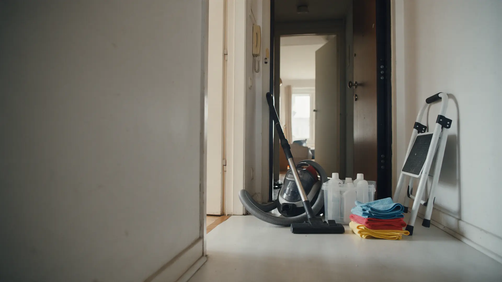
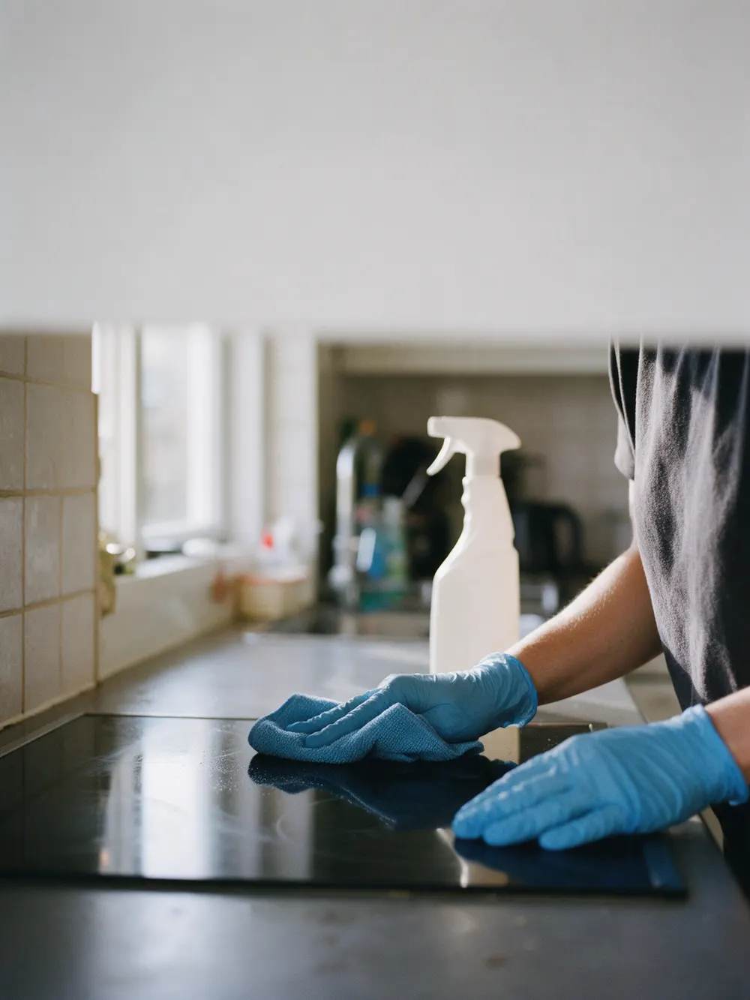
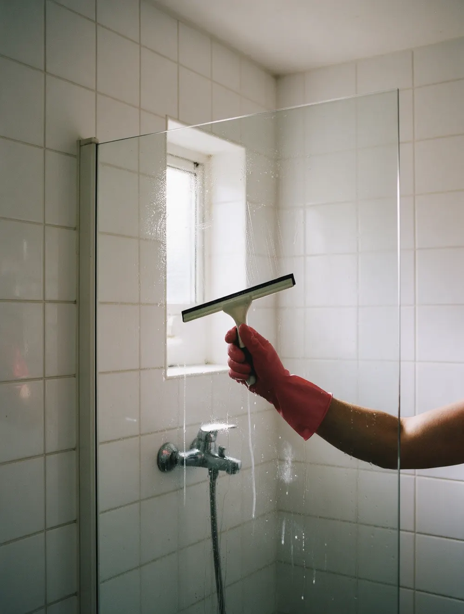
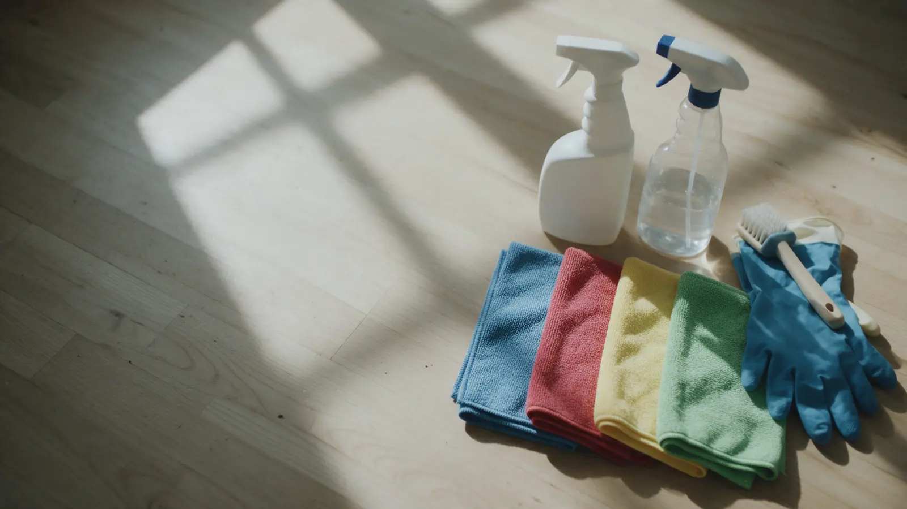

Уборка и мойка окон · Уфа
Уборка квартир и мойка окон в Уфе – своя химия, без хлора
Поддерживающая и генеральная уборка, окна и химчистка мебели. Цена по метражу до приезда, платите после приёмки.
- Цена по метражу – до приезда
- Приезжаем вовремя, со своей химией
- Без хлора по умолчанию

Что входит в уборку
Входит
- Кухня, санузел, комнаты и прихожая – по пунктам акта
- Свои средства, пылесос и стремянка
- Салфетки по зонам, цветом – не смешиваем
- Без хлора по умолчанию, с хлором – по просьбе
- Приёмка по акту вместе с клинером
Отдельно, если нужно
- Окна снаружи на высоте – по запросу
- Химчистка мебели – отдельная услуга
- Уборка после пожара или затопления
Цена по метражу – до приезда
Назовите площадь квартиры и вид уборки – получите сумму, а не «зависит от площади». Своя химия и оборудование в цене.
За м² площади
- Поддерживающаяоткрытые поверхности, сантехника, полы, мусор100 ₽ за м²
- Генеральнаяшкафы и техника внутри, пыль на высоте, окна изнутри, налёт200 ₽ за м²
- После ремонтастроительная пыль, следы краски и клея, плёнка с окон280 ₽ за м²
Минимум за квартиру
- Поддерживающаяот 2 500 ₽
- Генеральнаяот 7 000 ₽
- После ремонтаот 9 000 ₽
Окна, химчистка дивана и матраса, уборка офисов – считаем отдельно, по запросу. Цены ориентировочные: уточняйте при заявке.
Цены для примера. В вашем сайте будут ваши.
Как проходит
- 01
Заявка
Пишете метраж, вид уборки и адрес – отвечаем суммой и свободными датами.
- 02
Подтверждение
Накануне сообщаем, во сколько приедем и кто, и присылаем акт с пунктами.
- 03
Приезд
К своему времени, со своей химией и оборудованием.
- 04
Приёмка
Проходите по акту вместе с клинером, оплата после приёмки.



Что обещаем
Цена известна до приезда
Никаких «приедем, посмотрим».
Пункт не принят – доделываем до ухода
Принимаете по тому же акту, что пришёл в подтверждении.
Оплата после приёмки
А не «переведите заранее».
Клинер по договору с нами
За работу отвечает компания, ключи – по акту передачи.
Отзывы с Яндекс.Карт
«Девочек рекомендую, оперативно договорились, приехали вовремя, привезли с собой профессиональные средства, инвентарь для уборки, все новое, чистое, тряпочки и тд. Стоимость очень адекватная. Работали тщательно, профессионально, молодцы, я очень довольна.»
Аня Уразбахтина · 24 апреля 2026
«Пользуемся услугами клининговой компании для поддерживающей уборки и остаёмся очень довольны. Девчонки приходят вовремя, работают аккуратно и с душой — в квартире всегда чисто и свежо.»
Гульнара · 25 января 2026
«Заказывали генеральную уборку квартиры 90 м² — остались очень довольны! С утра до вечера старались, всё отмыли до блеска: духовка как новая, кровать двигали, фломастер от детей со стены оттерли.»
Ильгиз Шайхуллин · 4 июня 2025
Отзывы с карточки на Яндекс.Картах, без правок.
Частые вопросы
Нужны ли наши средства?
Нет: пылесос, стремянка, средства и салфетки – наши. Без хлора по умолчанию, с хлором – по вашей просьбе.
Что если меня не будет дома?
Ключи принимаем и возвращаем по акту передачи, фото каждой зоны до и после – в мессенджер.
Когда платить?
После приёмки: проходите по акту вместе с клинером. Пункт не принят – доделываем до ухода.
Сколько клинеров приедет?
Обычно приезжают двое, на большую квартиру – больше. Состав называем при подтверждении.
Назовите метраж – вернёмся с ценой и датой
- Адрес
- Проспект Октября, 37/5, цокольный этаж (вывеска Ozon), Уфа
- Часы
- Ежедневно с 09:00 до 22:00
- Телефон
- +7 927 924-36-36